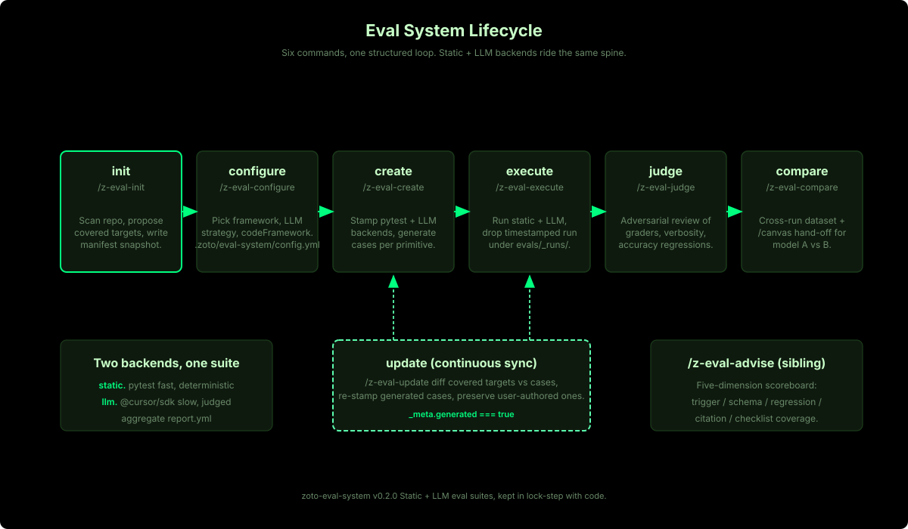
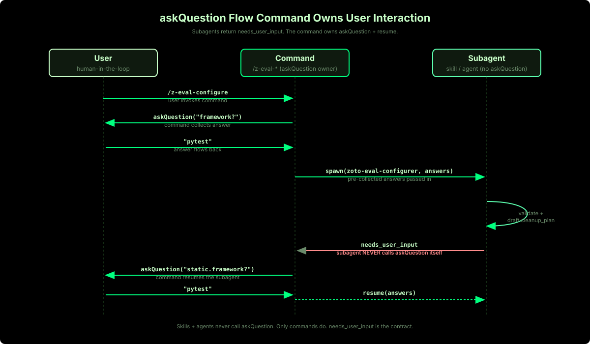
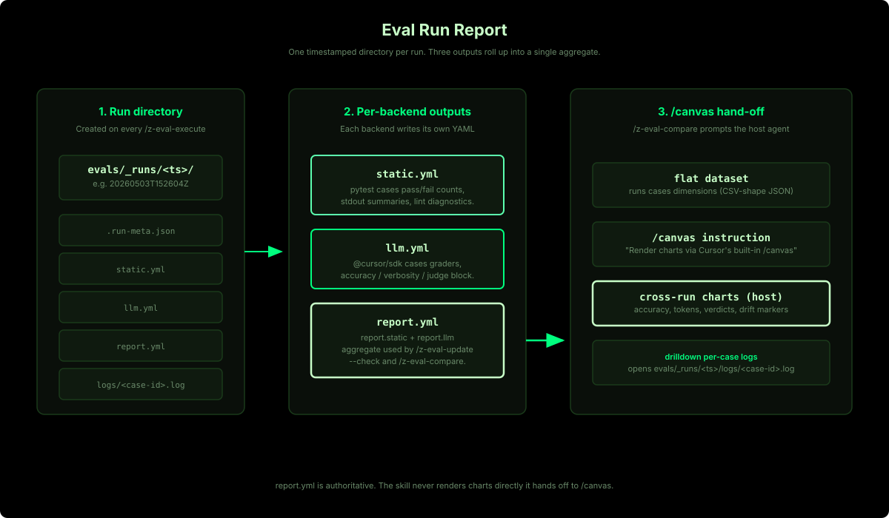
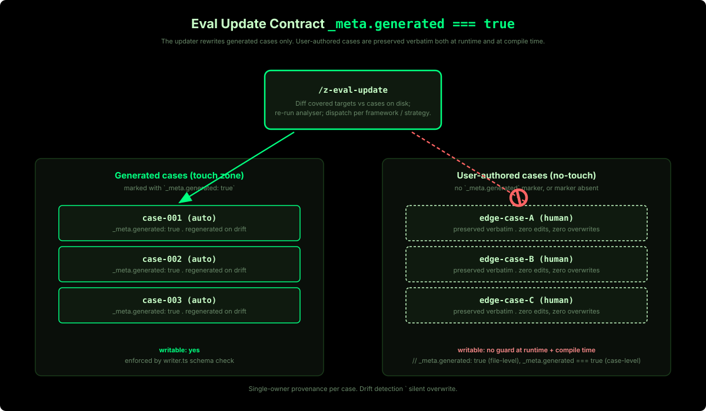
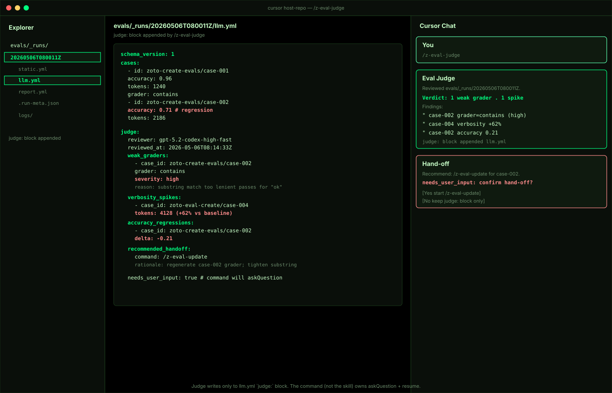
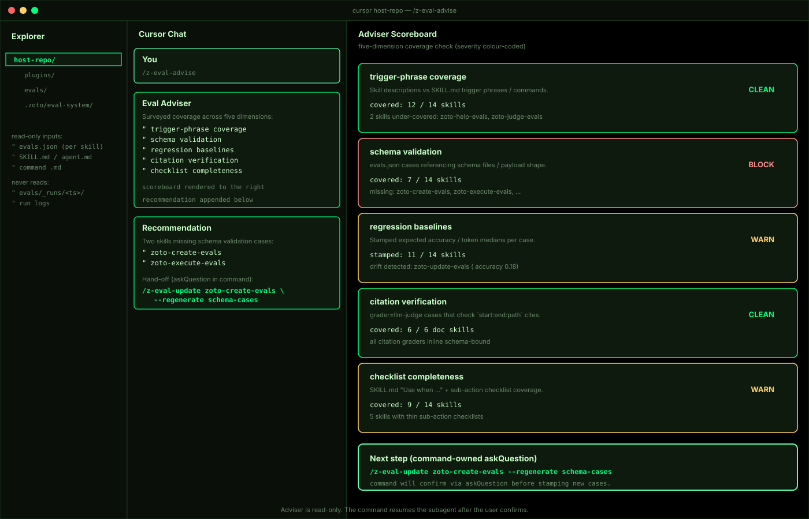
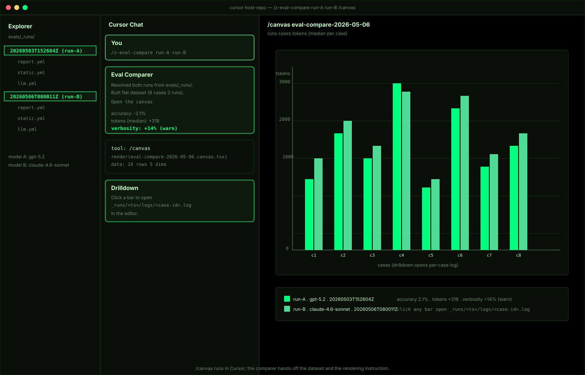

Design
A short tour of the architecture. The lifecycle is six commands wrapped around a
user-confirmed updater. Two backends — static (pytest / vitest / jest) and LLM
(@cursor/sdk) — share the same suite, the same manifest, and the same
_meta.generated contract. Drift in AI primitive behaviour is surfaced
explicitly — every eval change requires your approval before it is written.
Lifecycle architecture

update detects drift after code changes and presents each proposed eval change for your approval before writing.User confirmation for every change
No generated eval is rewritten without explicit user consent. When the updater
detects drift or the configurer proposes a change, every modification is presented
for approval before anything is written to disk. In CI, --check mode
detects drift without writing — it is a gate, not an auto-fixer.
Implementation: the askQuestion / needs_user_input contract
Under the hood, Cursor subagents cannot prompt the user directly. The plumbing works
like this: slash commands own askQuestion calls; they
pre-collect answers before spawning Task subagents and pass them in the Task prompt.
Agents and skills never call askQuestion;
they consume pre-collected answers, or return a structured needs_user_input
block so the command can prompt the user and resume the subagent with the answer.
This is standard Cursor subagent plumbing — the important guarantee is that the user
sees and approves every change.

needs_user_input is the structured handoff contract.Static backend
The default static layout is stamped from templates/static/pytest/ when static.framework is pytest. Vitest and jest variants follow their respective template trees.
conftest.py— shared fixtures.requirements.txt— pytest, pyyaml, and friends.per-primitive-test.py— pattern for generated tests.fixtures/— keepalive directory.
Run it with pnpm run eval (host wiring typically invokes python3 scripts/test.py).
LLM backend (@cursor/sdk)
Why @cursor/sdk: @cursor/sdk ^1.0.12 is the supported, typed
API for building agents and evaluations against Cursor's agent infrastructure. The older
february SDK package is not used anywhere in this plugin.
llm.strategy chooses code vs
declarative case shapes; when code,
llm.codeFramework selects vitest or jest reporters co-stamped with the
runner. The LLM backend is stamped at {evalsDir}/_llm/:
| File | Role |
|---|---|
runner.ts | Discovers cases, gates on --full + CURSOR_API_KEY, runs per-case, writes canonical llm.yml + logs/<case>.log. |
case.ts | Typed case loader; understands _meta.generated. |
graders/ | contains, regex, tool-called, llm-judge. |
metrics.ts | Tokens, duration, verbosity, accuracy, confidence. |
writer.ts | Schema-valid YAML + per-case logs. |
update.ts | Surgical diff engine (mirror of scripts/eval-update.ts). |
compare.ts | Emits the /canvas hand-off dataset. |
Model precedence at runtime:
--model <id>on the CLI.ZOTO_EVAL_MODELenv var.config.llm.model.idfrom.zoto/eval-system/config.yml.
Run output layout
Each /z-eval-execute writes a single timestamped folder.
{evalsDir}/_runs/<ts>/
static.yml # static-backend totals + per-case rows
llm.yml # LLM-backend totals + soft metrics + per-case rows
report.yml # merged rollup — primary input for compare + CI
.run-meta.json # run id, started_at, model id, git_ref
logs/
<case-id>.log # per-case verbose logs
report.yml is the authoritative aggregate; the comparer reads only report.yml.Result schema (llm.yml example)
schema_version: 1
run_id: 20260503-051900
started_at: 2026-05-03T05:19:00Z
ended_at: 2026-05-03T05:19:42Z
totals:
cases: 14
passed: 12
failed: 2
aggregates:
tokens_total: 48231
duration_ms_total: 42017
verbosity_avg: 0.41
accuracy_avg: 0.86
confidence_avg: 0.72
cases:
- id: zoto-create-spec/1
status: passed
tokens: 3182
duration_ms: 2710
verbosity: 0.38
accuracy: 0.92
confidence: 0.81The _meta.generated contract
Every generated eval case carries a _meta block. Cases without _meta, or with _meta.generated === false, are user-authored and are preserved verbatim.

_meta:
generated: true
source_hash: <sha256 of the target's normalised content at generation time>
last_updated: <ISO 8601 timestamp>
generated_by: "zoto-create-evals" | "zoto-update-evals"- The updater never modifies user-authored cases.
- It flags them for "may need review" and moves on.
- The validator rejects any
update.tssource that does not enforce this guard at compile time (literal-string check for_meta?.generated === true).
Critical-change rubric
| Change | Classification | Reason |
|---|---|---|
| Added target with no eval coverage | critical | New surface area is untested. |
| Removed target with active generated cases | critical | Dangling cases would pass vacuously. |
Skill frontmatter name or description changed | critical | Triggering and retrieval depend on these. |
| Public-surface change on a covered target | critical | The thing being tested behaves differently. |
| Prompt template change | critical | Generated prompts cite the template. |
| Comment-only / whitespace-only change | non-critical | No behaviour change. |
| Internal symbol change (not in public surface) | non-critical | Out of scope for covered behaviour. |
Manifest example
schema_version: 1
created_at: 2026-05-03T05:19:00Z
updated_at: 2026-05-03T05:19:00Z
git_ref: abc1234...def
generated_by: zoto-create-evals
discovery_config:
evalsDir: evals
skillsRoots: [.cursor/skills, skills]
discoveryTargets: [skill, command, agent, hook]
additionalAutomation: []
targets:
- id: skill:zoto-create-spec
kind: skill
path: plugins/zoto-spec-system/skills/zoto-create-spec/SKILL.md
content_hash: 9f8e...a12
public_surface:
frontmatter: { name: zoto-create-spec, description: "Guided..." }
tools: []
eval_files:
- plugins/zoto-spec-system/skills/zoto-create-spec/evals/evals.jsonJudge vs Adviser
The two reviewers complement each other. Judge reads run artefacts after a run; Adviser reads source definitions and eval files before any run.
Adviser (/z-eval-advise) | Judge (/z-eval-judge) | |
|---|---|---|
| When | Before running | After a completed run |
| Reads | Source definitions + eval files | Run artefacts (llm.yml, logs) |
| Answers | "What tests are missing?" | "How did the tests perform?" |
| Output | Gap report + create/update recommendations | Soft-metric annotations in llm.yml |

/z-eval-judge — adversarial review of the latest run. Output lands in llm.yml as an append-only block.
/z-eval-advise — five-dimension scoreboard plus a deterministic hand-off recommendation.Cross-run comparison
/z-eval-compare <run-1> <run-2> [<run-N>] locates each
run's report.yml, emits a flat dataset (runs × cases × dimensions),
and hands a templates/canvas/compare-prompt.md.tmpl instruction to the host
agent — which invokes Cursor's built-in /canvas tool. The skill never
renders charts itself. The canvas tool decides layout; drilldown opens
{evalsDir}/_runs/<run>/logs/<case>.log.

References
- Source-of-truth:
plugins/zoto-eval-system/README.md. - Schema:
templates/schema/config.schema.json. - Result schema:
templates/schema/result.schema.json.